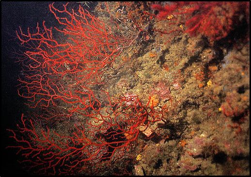
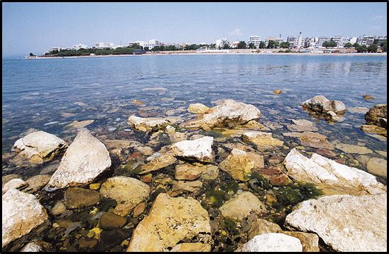
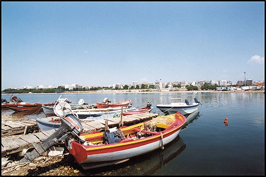
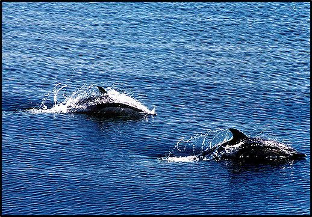
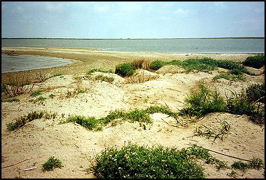
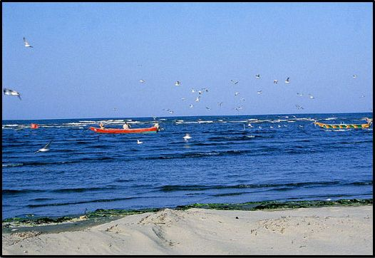

Η ζωή στη θάλασσαΗ ζωή στη θάλασσα
Η ζωή στη θάλασσαΗ ζωή στη θάλασσαΟι θάλασσες και οι ωκεανοί, καλύπτοντας το 71% της επιφάνειας του πλανήτη, αποτελούν τον χώρο μέσα στον οποίο δημιουργήθηκε αρχικά και εξελίχθηκε η ζωή.
Οι εξαιρετικά ποικίλες συνθήκες που επικρατούν στο θαλάσσιο περιβάλλον, διαμορφώνουν ποικίλα οικολογικά περιβάλλοντα, που ξεκινούν από τα επιφανειακά νερά, πλούσια σε οξυγόνο και ηλιακή ακτινοβολία, τις ακτές και το ανοικτό πέλαγος, μέχρι τα μεγάλα βάθη, όπου το φως δεν μπορεί να εισχωρήσει και που η θερμοκρασία είναι πολύ χαμηλή.
Οι ποικίλες συνθήκες, είχαν ως αποτέλεσμα την ανάπτυξη μεγάλης ποικιλίας οργανισμών, από τα μονοκύτταρα φύκη μέχρι τα μεγάλα θηλαστικά, τα οποία προσάρμοσαν τις λειτουργίες τους στις συνθήκες αυτές.
Μερικοί από τους κύριους παράγοντες που επηρεάζουν την κατανομή των οργανισμών στη θάλασσα είναι το ηλιακό φως, η θερμοκρασία, η αλατότητα, ο τύπος του πυθμένα, τα ρεύματα, η συγκέντρωση των θρεπτικών αλάτων κ.ά.
Οι Ελληνικές θάλασσες ως τμήμα της Μεσογείου είναι ολιγοτροφικές, δηλαδή με μικρή παραγωγικότητα και παρουσιάζουν τα χαρακτηριστικά μιας ημίκλειστης θάλασσας. Στη Μεσόγειο, το μέγιστο βάθος μετρήθηκε ανοικτά της Πύλου (4.404μ), ενώ το μέσο βάθος της είναι 1.429 μέτρα.
Η Ελλάδα με μήκος ακτών περίπου 15.000 χλμ, από τα 46.000 χλμ της Μεσογείου, έχει την πιο εκτεταμένη ακτογραμμή από όλες τις Μεσογειακές χώρες, ενώ συγχρόνως η ακτογραμμή της διακρίνεται και για την μεγάλη της ποικιλομορφία. Η ακτογραμμή αυτή, μοιράζεται σχεδόν εξίσου ανάμεσα στην ηπειρωτική και τη νησιώτικη χώρα. Η Ελλάδα διαθέτει περίπου 9.500 νησιά και τρία αρχιπελάγη, του Αιγαίου, που είναι το μεγαλύτερο, του Ιονίου και της Κρήτης.
Παρά την μικρή παραγωγικότητά τους, οι ελληνικές θάλασσες εμφανίζουν μεγάλη ποικιλία ειδών.
Στις Ελληνικές θάλασσες έχουν καταγραφεί 447 είδη ψαριών από τα 579 της Μεσογείου, 101 είδη Εχινόδερμων (αστερίες, αχινοί), από τα 150 είδη της Μεσογείου, 300 είδη Διθύρων (αχιβάδες, μύδια στρείδια), από τα 400 της Μεσογείου και 15 είδη κητών, (δελφινιών και φαλαινών), από τα 16 που εμφανίζονται στην Μεσόγειο.
Η θαλάσσια περιοχή που παρουσιάζει μεγάλο ενδιαφέρον είναι αυτή της παράκτιας ζώνης. Παράκτια ζώνη είναι η ζώνη που εξαπλώνεται εκατέρωθεν της ακτογραμμής και περιλαμβάνει και ξηρά και θάλασσα. Στη θάλασσα, η παράκτια ζώνη φτάνει μέχρι το βάθος των 50 μέτρων. Οι παράκτιες περιοχές της Ελλάδας διαθέτουν μεγάλη ποικιλία φυσικών χαρακτηριστικών, με την συνύπαρξη διαφορετικών τύπων οικοσυστημάτων ( δέλτα, εκβολές ποταμών, ρηχά νερά, αλμυρά έλη, λιμνοθάλασσες) και συγκεντρώνουν μεγάλο μέρος του πληθυσμού και πολλές δραστηριότητες (τουρισμός, αλιεία, βιομηχανία).
Στο παράκτιο περιβάλλον έχει προσαρμοστεί και αναπτύσσεται μια πλούσια πανίδα και χλωρίδα. Επίσης, η έντονη παρουσία των κυμάτων, η παλίρροια και τα ρεύματα, έχει ως αποτέλεσμα τα νερά να οξυγονώνονται αρκετά και ολόκληρη η ζωή της θάλασσας να ανανεώνεται. Εκεί, τα ψάρια, το πλαγκτόν, ακόμα και το βένθος αναδημιουργούνται και βρίσκουν τον κανονικό τους ρυθμό.




